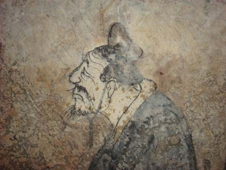

#Khổng Tử 孔子 Kǒng Zǐ, Confucius
Đặt nền cho Nho giáo quanh khái niệm Nhân (仁, rén) — lòng nhân ái có thứ bậc — và Lễ (禮, lǐ) — nghi thức làm khung cho quan hệ xã hội. Ông xem việc tu thân của người quân tử (君子, jūnzǐ) là gốc của trị quốc, đề cao "chính danh" (正名) và học tập suốt đời. Luận ngữ (論語), do học trò ghi lại, trở thành văn bản cốt lõi của hệ thống giáo dục và khoa cử Đông Á suốt hơn hai thiên niên kỷ, định hình quan niệm về gia đình, bổn phận và chính quyền ở Trung Quốc, Triều Tiên, Nhật Bản và Việt Nam.
Cùng thời và cùng lĩnh vực có Lão Tử (truyền thống) và Tử Sản (子產) nước Trịnh, người cải cách pháp luật sớm. Khổng Tử vượt trội về phạm vi (a) và độ bền (b): tư tưởng của ông được thể chế hoá thành hệ thống khoa cử từ đời Hán tới đầu thế kỷ 20, trong khi Tử Sản chỉ còn trong sử liệu. Về counterfactual (d), không có Khổng Tử, truyền thống Lễ nhà Chu khó được hệ thống hoá thành một đạo đức học phổ quát.
- Chu Công (周公) kế thừa qua trường phái
- Lão Tử CH00-BCE06-02 tương đồng độc lập suy đoán học giả
- Mạnh Tử (孟子) kế thừa qua trường phái
- Mặc Tử (墨子) phản bác trực tiếp
Stanford Encyclopedia of Philosophy, "Confucius" (https://plato.stanford.edu/entries/confucius/); Sử ký, Khổng Tử thế gia.